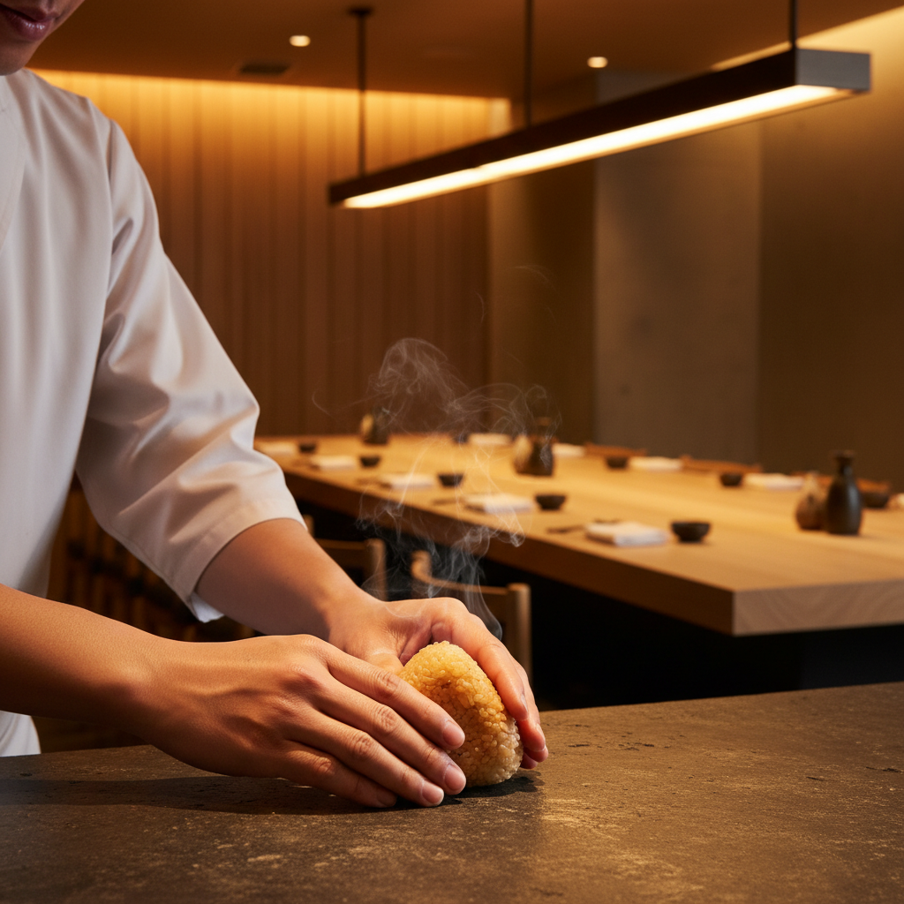

Paris Launch 2026
The Art of
The Art of
Warm Rice
12 Seats. 40°C. One Niigata Journey. Experience the theatricality of hand-pressed onigiri omakase in the heart of Paris.
Join the Private Tasting
Be the first to experience the "Golden 40°C" sensory journey. No plastic, no shortcuts.
Join 0 others on the waitlist

The Sensory Moat
KOME disrupts the onigiri status quo by returning to the craft's roots.
🌾
Niigata Provenance
Exclusively serving "Uonuma Grade" Koshihikari rice, sourced directly from Niigata cooperatives.
🔥
The Golden 40°C
Rice served at the precise temperature where umami is maximized. Hand-pressed on demand.
🍶
Sake Pairing
Curated Niigata labels from Hakkaisan to Kubota, paired to enhance every bite.
A Theatrical Evening
Our 12-seat bar in the 1er Arrondissement is designed for intimacy. Watch the chef's hands work as each onigiri is served on ceramic or washi paper—never plastic wrap.
- 5 hand-pressed premium onigiri
- Seasonal otsumami appetizers
- Authentic Niigata sake flights
- Japanese Food Supporter certified